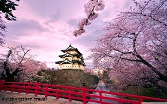
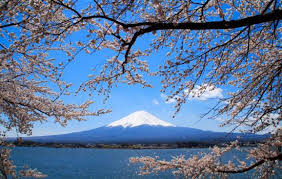

Lâu đài Kumamoto
Xây dựng năm 1600, lâu đài Kumamoto.Đâylà một trong ba tòa lâu đài lớn nhất ở nước Nhật...

Núi phú Sĩ
Một trong những bieeut tượng nổi tiếng nhất Nhật Bản ,Ohus mĨ là ngọn núi cao nhất và là một trong "Ba núi Thánh" của quốc gia.Ngọc núi lửa vẫn chưa hoạt động...

Đền Kifune
Nằm kề bên Kurama là ngọn núi Kifume ,nơi nổi tiếng chứa đựng nguồn nước tinh khiết nhất.Ngôi đền Kifune đã trở thành địa điểm nổi tiếng thu hút những...